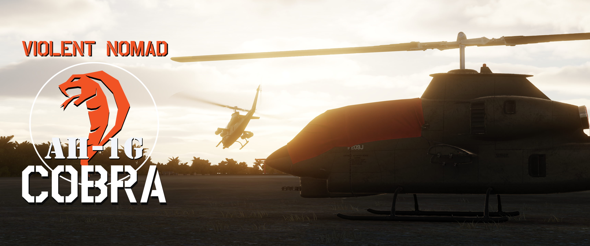

DCS: AH-1G Cobra Manual#
Welcome to the DCS AH-1G Cobra Manual. This document will be your quick reference guide for how to operate the helicopter.

AH‑1G Cobra — Overview#
The AH‑1G Cobra is a Vietnam‑era light attack helicopter developed from the UH‑1 Huey airframe to provide dedicated fire support. It features a slim, tandem cockpit (pilot and gunner) and a single turboshaft powerplant, giving it a smaller frontal profile and improved forward visibility compared with utility helicopters.
Typical roles include close air support, armed escort, and armed reconnaissance. The type is built around a forward‑firing weapons philosophy: a nose‑mounted gun turret supplemented by hardpoints for unguided rockets and guided anti‑armor weapons on later variants.
Key features
- Two‑seat tandem cockpit for pilot and gunner
- Narrow fuselage and reduced frontal area for target survivability
- Forward weapons station with turreted cannon and external stores
- Designed for agility, speed, and precision support in low‑altitude environments
Operational notes
- Entered service during the late 1960s and saw extensive combat in Vietnam
- Optimized for quick reaction fire support but limited by light armor and payload compared with larger attack helicopters
- Influential design that led to numerous follow‑on Cobra variants with upgraded sensors and weapons